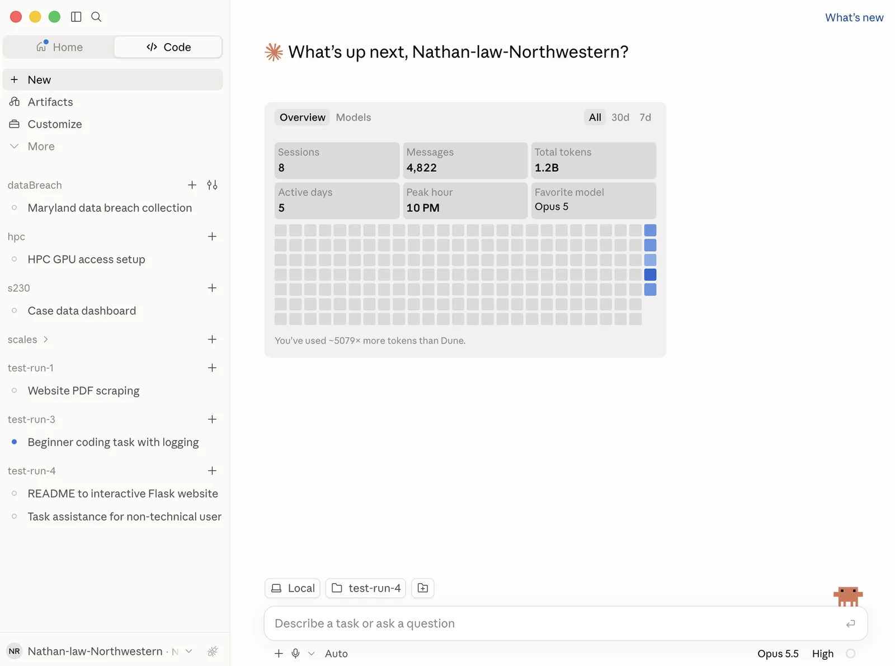
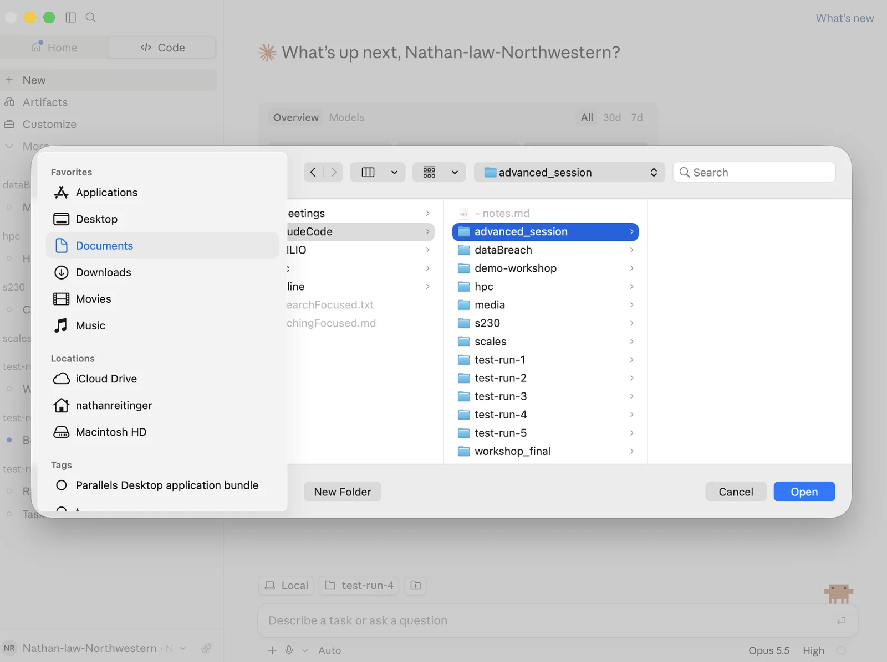
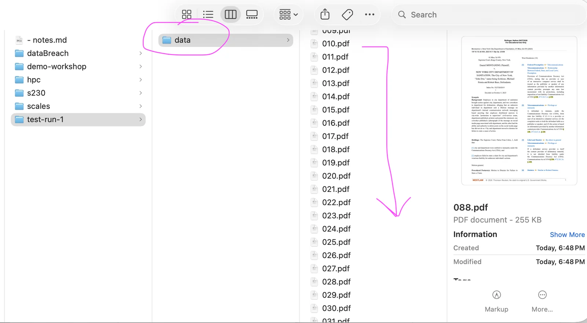
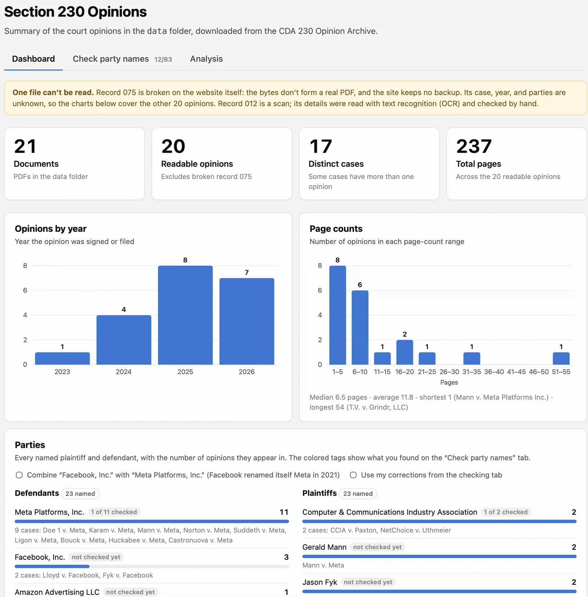
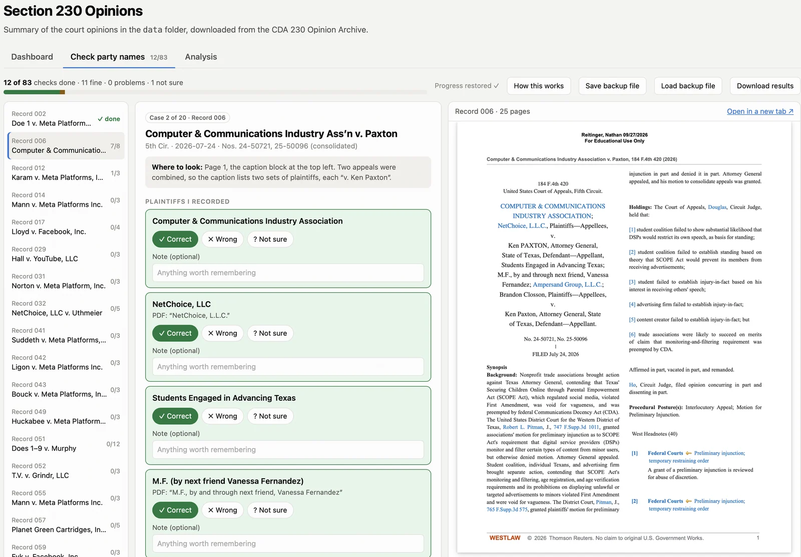
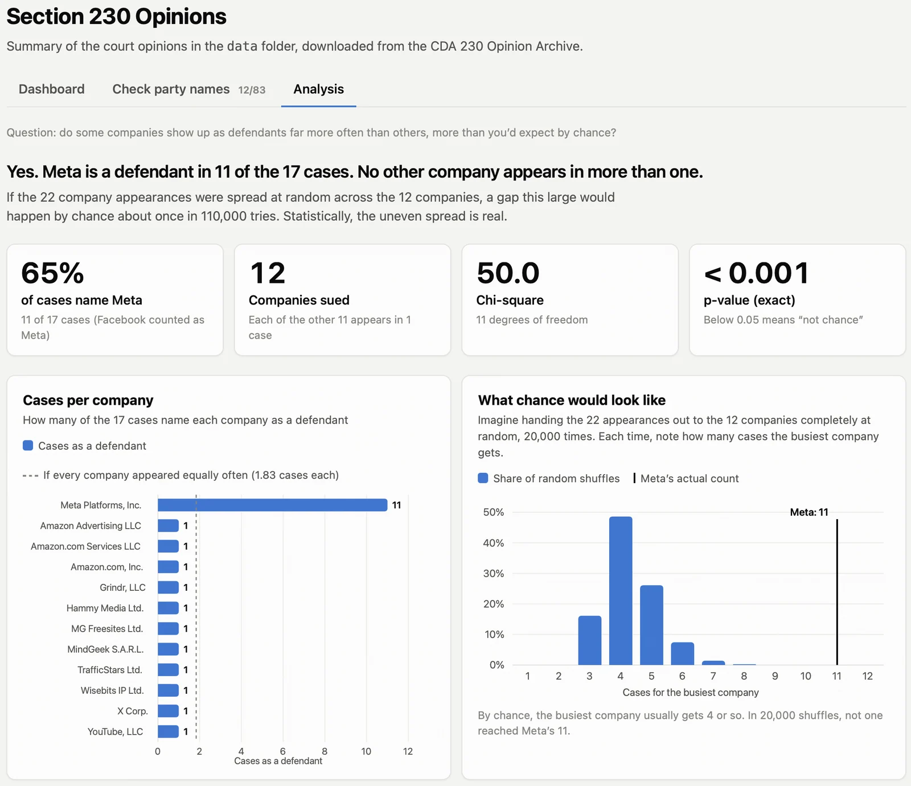
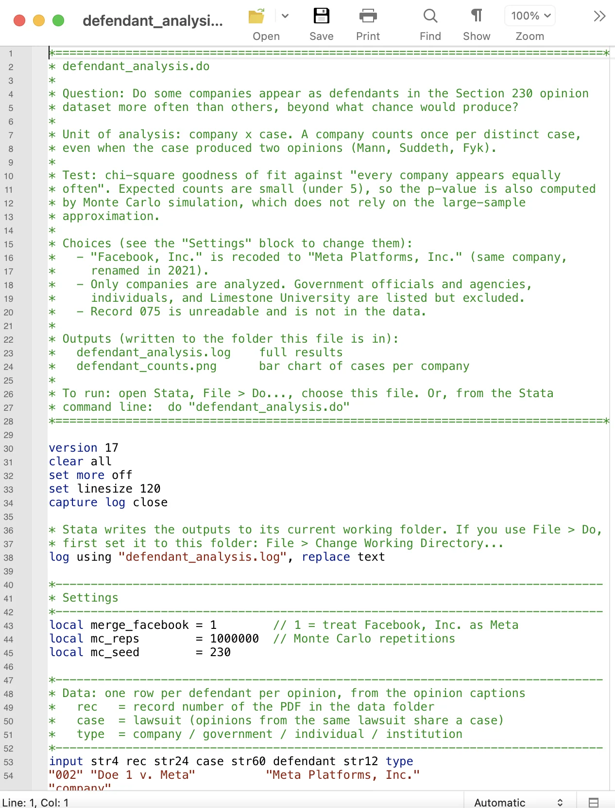
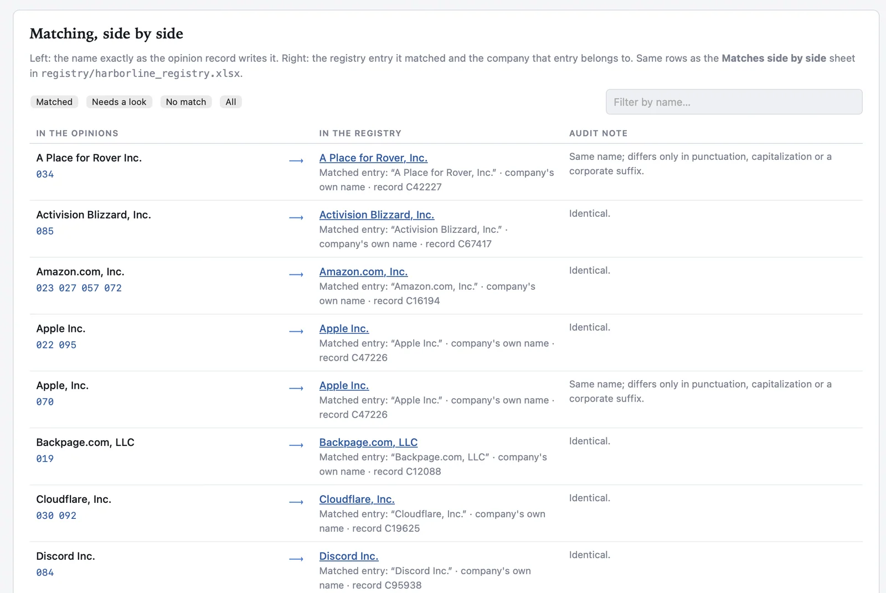

[advanced session]
A 1-hour session; we may not cover all of the material. We will try to cover:
- scraping data
- building an interactive dashboard to visualize your data
- human-based verification
- running stats (stata, R, Python...)
You do not need to write code.
Before we start
Your data for this part of the workshop:
- Opinion archive —
The shape of the hour
| Step | Description |
|---|---|
| Collect the opinions | PDF collection |
| Visualize information | A dashboard living in your browser |
| Verify party names | A human-verified task |
| Analysis | Stata or Python or R or Claude itself |
Step 0 — Setup
Sample prompts
promptI can code. Give me Python (C, R, Ruby, Go...) files when you help me.
promptI have no idea what code is. I know almost nothing about computers. I can click buttons. Help me with this task, but keep that in mind.
promptI want you to keep detailed logs of everything you do. I want to inspect this information later so that I can make sure it was correct. >>>>>> this slows Claude down
promptAsk me questions when you are stuck or if you need a clarification. >>>>>> this slows Claude down
What does success look like?


Step 1 — Collect the opinions
Tips
- A sample command is all that is needed
promptGet all PDFs from this website (https://nathanreitinger.github.io/cda230-opinion-archive) and put them in a folder called "data" that I can see. Double-check that you have everything. Keep logs.
Verify: What did you get?Mandatory
- what was on the website (manual: how many files should there be)
- is anything facially wrong with the files you downloaded (manual: do they look the same as the ones on the website)
- how many files did you get (ask promptsummarize this information for me in chat; what did we get)
What does success look like?

A note on scraping data
- check for robots.txt (rules for scrapers)
- Claude may try to slow a scrape down to prevent server overload; there are workarounds (Selenium), but most involve custom scraping code that you would need to build
- If you are heavily or routinely scraping a website, it might make sense to reach out to the website's owners and ask them about preferred procedures
- Many companies that provide access to valuable information (e.g., Westlaw or Lexis) heavily restrict scraping with technical blocks and contractual terms concerning text and data mining. When in doubt, check terms first
Tick “I'm done verifying” first.
Step 2 — Investigating the data
Tips
Think about what you want! What should you focus on (some of this may happen automatically):
- How many cases
- Which plaintiffs
- Which defendants
- What years (histogram)
- Pages of text (per opinion, overall)
- Which courts are represented (specific court, level, circuits)
promptBuild me a single self-contained data dashboard based on the data folder. I need it to be local. I want:
- how many opinions, how many distinct cases
- a histogram of opinions by year
- the distribution of page counts
- the defendants and plaintiffs that appear in the dataset
Improvements: What could be better?
- more aggregate information
- a more interactive website
- different color theme (fonts, front-facing quibbles)
- different stats (mean opinions per month)
- more interpretation of the information (summaries)
Verify: What did you get?Mandatory
- are the numbers correct
- correct number of cases represented
- are the years right
- manually verify by looking at the actual PDFs for comparison
- if applicable, check the page counts for one of the cases
What does success look like?

- Data dashboards like this one, and most websites built fully with LLMs, have certain tells signaling AI creation. That may be fine for your purposes, but something to be aware of.
Tick “I'm done verifying” first.
Step 3 — Explicit verification
Tips
A decision about the party name may be a computable task, if the data is found online in a machine-readable format. However, if the party name is pulled from a PDF, then it might have errors.
- This dataset is small, so we might be able to check all PDFs manually, but with larger datasets it might be better to check a random 10% and only keep the AI-assumed names if there is an agreement between what you would decide and what the AI decided.
promptNow I want to check that the dashboard correctly logged party names. I want help confirming that the PDFs match what you decided.
I need some type of coding website, integrated into the dashboard, where I go through each of the labels you decided on for the names of the parties and match them with what is actually in the PDF.
I need this website to be persistent so that I can close it and come back to finish the job later.
-
In your own projects, make sure to double-check anything that is not computable, and if you don't know where that line is, ask:
- promptcheck all of your work, in particular, what decisions did you make in your response that were not directly computable or involved higher-level thinking
-
If your project relies on an area that has this type of non-computable inference, check the work.
What does success look like?

Step 4 — Analysis
Tips
-
Do you have a statistical test in mind, or would you like to brainstorm ideas? If you do not pick something, Claude will make a guess (which might be wrong). Brainstorming (with Claude) before you run the test can be helpful.
-
Do you want to produce figures for a paper or just visualize the results?
promptI want to know if some companies show up more often as a defendant than other companies?
I want a Stata .do file to run this.
Make sure you visualize these results in the dashboard.
What does success look like?


Step n — Bonus Level
Tips
- Break the task up into parts and verify each part. The frist part is whether you've downloaded all of the new data.
promptWe are adding in information about the plaintiffs and defendants. A new dataset is at https://nathanReitinger.github.io/harborline-registry/.
I want you to pull down that information, save it somewhere, and then match company names and create a new part of the dashboard that visualizes the results.
Do this in another tab of the existing dashboard.
- The second part is what did you match on? If a defendant company has a different name than that found in the registry, how will Claude handle that?
- What exactly was the match requirement (exact or fuzzy)
- maybe you want a way to review matches and approve them yourself
- maybe you would like to resolve all discrepancies and then hide information on the dashboard about matching
- maybe you want to visualize information from the newely added dataset
What does success look like?
